01钩子 / 问题
从大会见闻切入数字人上岗
开场先说 AI 主播已经开始带货，再用京东云大会现场体验作为来源，最后把最惊艳的能力落到已经上岗的数字人。
数字人直播已经从嘴型同步演示进入品牌规模化使用，能够与真人同播、走秀、讲商品，并在部分品牌贡献实际GMV。
这条中位内容的互动结构明显偏传播：355赞、200分享，而收藏只有178。它采用‘你可能被骗了’的社会话题包装，再用大会、品牌数量、GMV和案例建立可信度，最终把商业宣传转成消费信任争议。
数字人直播已经从嘴型同步演示进入品牌规模化使用，能够与真人同播、走秀、讲商品，并在部分品牌贡献实际GMV。
不是复述内容，而是标出每一段承担的叙事任务、观众问题和画面证据。
开场先说 AI 主播已经开始带货，再用京东云大会现场体验作为来源，最后把最惊艳的能力落到已经上岗的数字人。
视频声称超过一万家品牌使用、年带货超过140亿，并反问最近的商品是否已经由 AI 卖出。数字先建立行业成熟感。
她展示嘴型语音同步、数字人与真人一起讲商品，以及数字人走秀展示穿搭，把能力从拟真扩展到直播协作。
安踏线下旗舰店的数字人讲商品、折扣和穿搭，巴拉巴拉搭建近十个直播间；品牌名承担商业可信度。
视频给出数字人直播占GMV 15%的案例，再描述情感音色、自然嘴型、不同品类主播与无AI味话术。
结尾不再继续讲功能，而是问观众会不会在 AI 直播间买东西，把商业展示转成信任与就业讨论。
下列章节覆盖视频的主要论点、步骤与结果；每段都保留时间码和关键画面。
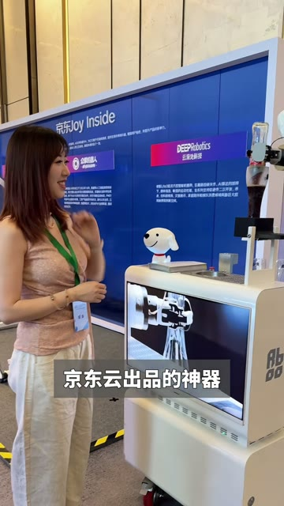
开场先说 AI 主播已经开始带货，再用京东云大会现场体验作为来源，最后把最惊艳的能力落到已经上岗的数字人。
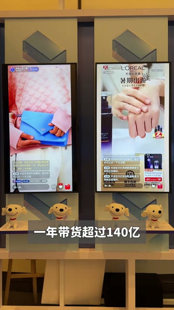
视频声称超过一万家品牌使用、年带货超过140亿，并反问最近的商品是否已经由 AI 卖出。数字先建立行业成熟感。
她展示嘴型语音同步、数字人与真人一起讲商品，以及数字人走秀展示穿搭，把能力从拟真扩展到直播协作。
安踏线下旗舰店的数字人讲商品、折扣和穿搭，巴拉巴拉搭建近十个直播间；品牌名承担商业可信度。
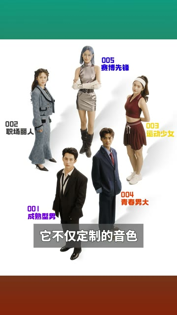
视频给出数字人直播占GMV 15%的案例，再描述情感音色、自然嘴型、不同品类主播与无AI味话术。
结尾不再继续讲功能，而是问观众会不会在 AI 直播间买东西，把商业展示转成信任与就业讨论。
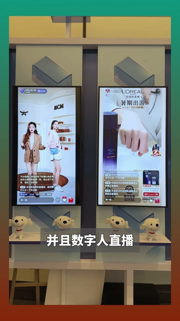
短视频每 1 秒、常规视频每 2 秒、超长视频每 3 秒取一帧。
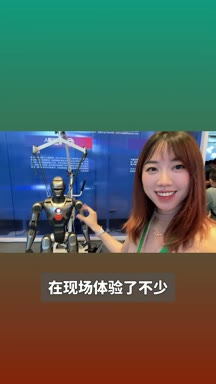
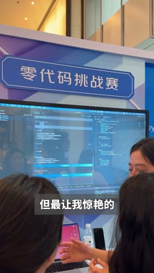
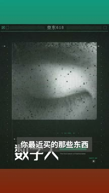
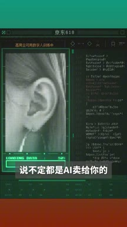
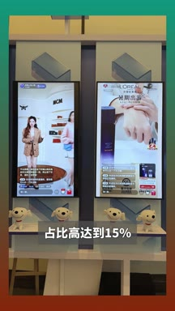
小红书官方 zh-CN 字幕 · 21 段 · 534 字。字幕只记录声音；工具名、界面文字和结果含义必须结合上方视觉知识地图复核。
你肯定想不到ai主播已经开始带货了，就在刚刚我参加完京东云大会
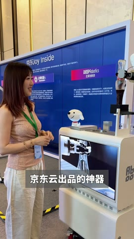
在现场体验了不少京东云出品的神器，比如零代码做app和agent
但最让我惊艳的是这些已经上岗直播带货的京东数字人
这些数字人已经有超过一万家品牌都在用，一年带货超过一百四十亿
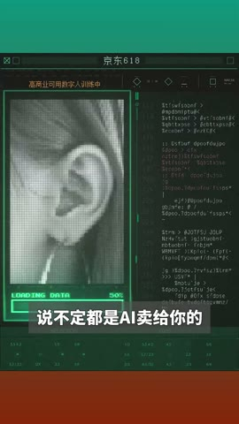
想想你最近买的那些东西，说不定都是ai卖给你的，说实话啊
我知道京东在电商加ai上憋大招，但没想到他们把数字人做到了这么逼真
嘴型和语音的完全同步，这都是一些基本功了，而数字人加真人的双人直播
Ai和人类一起直播讲解商品，数字人还能走秀展示穿搭
这个就太赛博了，完全看不出来任何猫腻，就拿大家都知道的安踏来说
他们已经在线下旗舰店打造了数字人直播间
什么商品讲解折扣情况，爆款穿搭的信息全靠这个数字人在讲解
也可以和运动裤混搭，打造出不同的时尚造型
无论哪种搭配，大家都可以轻松驾驭，另外一个童装品牌巴拉巴拉也借助了数字人
搭建了近十个直播间
并且数字人直播在整个gmv占比高达百分之十五
所有的这些技术都是基于京东数字人
这次六幺八更是推出了行业首批高盛宴可用的数字人
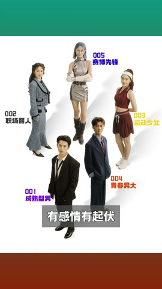
它不仅定制的音色有感情有起伏
嘴型同步的很自然，而且针对不同的品类有各种各样的特色主播
更重要的是也没有那种ai味儿，各种场景的带货话术，真的就是信手拈来
分分钟带火，你会在ai直播间买东西吗？
内容带有京东云大会与品牌产品叙事，公开页无法确认合作与投流；一万家品牌、140亿与GMV 15%均需品牌或财报来源核验。评论明确显示信任、互动能力和虚拟试穿真实性仍是阻力。
打开小红书原帖 ↗